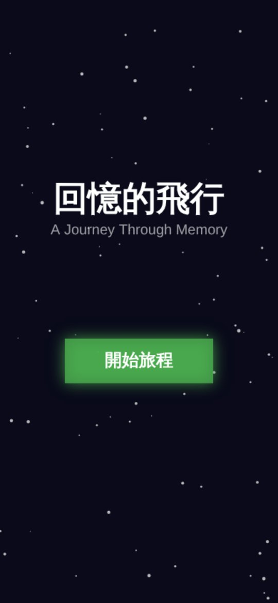
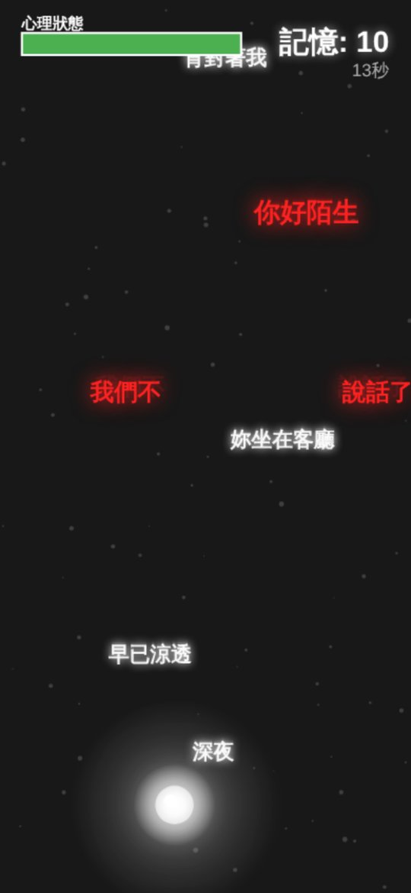

Short on time? Read "Mechanics as Metaphor" and "Two Kinds of Pain". That's where the idea lives.
Overview
Memories of Flight (飛行的回憶) is not a game you play to win. It's a game you play to feel something. Built as a single HTML file using Canvas and vanilla JavaScript, it's a narrative experience about loss, regret, and the slow work of reconciliation — told not through cutscenes, but through the act of dodging and catching words as they fall from the sky.
The premise is simple: you control a glowing soul drifting upward through six chapters. White text fragments are memories to catch. Red text fragments are pain to avoid. But the mechanics carry a deeper logic — and the way the screen responds to damage tells you more about the story than any dialogue could.



Why I Built This
Traditional storytelling media — novels, films — let you observe emotion. Interactive media can let you inhabit it. I wanted to test a specific hypothesis: that game mechanics themselves can function as metaphor. When your thumb is physically trembling to dodge a red phrase that reads "it's all your fault," you're not just processing information. You're experiencing a micro-simulation of emotional impact.
The goal wasn't to make something fun. It was to make something that lingers — that players remember not because of a high score, but because of what they felt in the gap between catching a beautiful memory and being immediately punished for it.
Mechanics as Metaphor
The core interaction — catch white words, dodge red words — sounds like any other arcade game. What makes it different is that every design decision maps to an emotional idea.
Collision detection is deliberately uneven. White text (memories) has a generous hit zone. Red text (pain) has a tight one. This isn't a balance problem — it's the point. In life, warmth is hard to hold onto; hurt finds you easily. The asymmetric collision radii encode that feeling directly into the controls.
Catching a memory triggers a danger spike. After you successfully grab a white fragment, the red text spawn rate jumps from 50% to 95%. Every beautiful recollection is immediately followed by a wave of pain. This is the emotional core of the game: remembering something good doesn't bring comfort — it brings everything that came after.
Your soul glows brighter when it remembers. Each white text collected expands the player character's glow radius and quickens its pulse. It's a tiny visual reward — a moment of warmth before the red flood hits.
Two Kinds of Pain
The game's two main chapters use identical core mechanics but completely different damage aesthetics. This was a deliberate design decision rooted in a simple insight: not all pain looks the same.
Chapter 1 — "One Month Ago": The palette is blue-purple. When red text hits you, the screen flashes red and shakes violently. The words shatter into individual character fragments that rain down like debris. This is acute trauma — sharp, loud, impossible to ignore.
Chapter 2 — "Three Months Ago": The palette goes darker, colder. When red text hits, the screen doesn't shake — it slowly loses color, fading toward grayscale. Long sentences crack in half mid-flight and plummet at accelerated speed. This is a different kind of pain: the quiet erosion of a relationship. Words that break off before they finish. The feeling of something draining away rather than exploding.
Same engine, completely different emotional register.
Narrative Structure
The game cycles through six chapters across two timelines. Between chapters, a recap shows three illustrated scenes with text that fades in line by line. At the end of each recap, the scene shatters into particles before the next chapter begins — a visual metaphor for memories fragmenting.
The text content — both the white fragments you catch ("that Friday afternoon," "the text message you sent," "a small shoe rolling across the floor") and the red phrases you dodge ("you only ever loved your work," "I regret everything") — was all written to carry narrative weight. They're not random vocabulary. They're pieces of a story the player assembles through play.
How AI Was Used
Claude's role in this project went beyond code generation into something closer to creative collaboration. When I described abstract emotional goals — "I want the pain in Chapter 2 to feel muffled, not loud" — Claude translated that into a concrete technical proposal: replace the screen shake with progressive desaturation. When I said "the sentence should feel like it was cut short, like someone who stopped talking mid-thought," Claude implemented a text-splitting mechanic triggered at 20% of screen height, with the broken halves accelerating at 2.5x speed.
The codebase still carries traces of our debugging conversations: console logs tagged with emoji (🎯 生成紅字..., 💥 碰撞!..., 📊 統計...) that we used to trace why certain red texts weren't shattering correctly, or why the sentence-split timing was off in Chapter 2. These aren't cleaned up — they're artifacts of a working process.
Key Design Decisions
Canvas over DOM. Particle systems, real-time pixel manipulation (the grayscale filter), radial glow effects, and screen shake all perform far better on Canvas than with DOM elements. The trade-off is losing built-in accessibility — every UI element had to be drawn manually. For a game that's fundamentally about visual and kinesthetic experience, Canvas was the right medium.
Subtraction as a design principle. Mid-development, the UI had accumulated score displays, timers, hint text, and health indicators. I deliberately removed most of them, keeping only a minimal health bar and a memory score. The reasoning: any element that reminds the player "this is a game" breaks the emotional immersion. In an era where AI can generate infinite content, knowing when to stop adding is the harder skill.
Player size reduction. The player avatar shrank from 50px to 35px during iteration. Smaller meant more precise dodging, which meant each near-miss felt more personal. When you barely escape a red phrase by a few pixels, the relief is visceral in a way a 50px hitbox can't deliver.
Split point at 20%, not 50%. Chapter 2's sentence-breaking mechanic initially triggered at the midpoint of the screen. But at that height, fast-falling text often passed the trigger without being detected. Moving it to 20% gave the split more screen time — players could actually see the sentence crack apart and accelerate — and gave them more (but not enough) reaction time.
What Shipped
A complete, playable narrative game in a single HTML file: six chapters across two timelines, each with three illustrated recap scenes, playable on phones and desktops.
Reflections
This project was my test of something I believed: game mechanics can carry emotional weight without a single line of traditional dialogue. When the screen slowly loses color in Chapter 2, what I wanted was for players to feel what's happening without a narrator explaining it. The mechanic is the message.
The collaboration model with Claude worked especially well for this kind of project, where the gap between creative intent and technical implementation is wide. I could say "the pain should feel like it's being swallowed, not screamed" and get back a concrete implementation using pixel-level desaturation instead of screen flash. That translation layer — from emotion to code — is where AI collaboration adds the most value in creative work.
If I were to build on this, I'd add an ambient soundtrack that shifts with the chapter mood, and explore whether the finale could use the accumulated memories (the white texts the player caught) to generate a personalized ending. The architecture supports it. The emotional logic demands it.
時間不多的話，讀「機制即隱喻」和「兩種不同的痛」就好，核心的想法都在那裡。
概覽
飛行的回憶不是一款讓你玩來贏的遊戲。它是一款讓你玩來感受的遊戲。以單一 HTML 檔案、Canvas 和原生 JavaScript 打造，它是一段關於失去、悔恨與和解的敘事體驗——不是透過過場動畫來訴說，而是透過閃避和接住從天而降的文字這個動作本身。
前提很簡單：你操控一個發光的靈魂，緩緩穿越六個章節。白色文字碎片是要接住的回憶。紅色文字碎片是要閃避的傷痛。但機制承載著更深的邏輯——畫面對傷害的反應方式，比任何對白都更能說明這個故事。
為什麼做這個
傳統敘事媒介——小說、電影——讓你觀察情緒。互動媒介可以讓你住進情緒裡。我想驗證一個具體的假設：遊戲機制本身可以作為隱喻。當你的拇指物理上在顫抖著閃避一段寫著「都是你的錯」的紅色文字時，你不只是在處理資訊，你在經歷一次微型的情緒衝擊模擬。
目標不是做一個好玩的東西，而是做一個會留下來的東西——玩家記住它不是因為高分，而是因為在接住一段美好回憶後立刻被懲罰的那個間隙裡，他們感受到的。
機制即隱喻
核心互動——接住白字、閃避紅字——聽起來和任何街機遊戲一樣。讓它不同的是，每個設計決策都對應一個情緒概念。
碰撞判定刻意不對稱。白色文字（回憶）有寬鬆的判定範圍。紅色文字（傷痛）有嚴格的判定範圍。這不是平衡問題——這就是重點。在人生中，溫暖難以抓住；傷害輕易找上你。不對稱的碰撞半徑把這種感受直接編碼進操控裡。
接住回憶會觸發危險激增。成功抓到白色碎片後，紅字的生成率從 50% 飆升到 95%。每一段美好的回憶都立刻接著一波痛苦。這是遊戲的情緒核心：想起美好的事不會帶來安慰——它帶來的是之後發生的一切。
你的靈魂在記住時會發光更亮。每接住一段白色文字，玩家角色的發光範圍會擴大、脈動加快。這是一個微小的視覺獎勵——紅色洪流來臨前的一刻溫暖。
兩種不同的痛
遊戲的兩個主要章節使用相同的核心機制，但完全不同的傷害美學。這是一個刻意的設計決策，根植於一個簡單的洞察：不是所有的痛看起來都一樣。
第一章——「一個月前」：色調偏藍紫。當紅字擊中你時，畫面紅光閃爍並劇烈震動。文字碎裂成單字碎片如雨般落下。這是急性創傷——尖銳、響亮、無法忽視。
第二章——「三個月前」：色調更暗、更冷。紅字擊中時畫面不會震動——而是慢慢失去色彩，逐漸褪向黑白。長句子在飛行途中斷裂成兩半，加速墜落。這是不同的痛：一段關係的靜默侵蝕。話說到一半就斷了。某種東西在流逝而非爆炸的感覺。
同一個引擎，完全不同的情緒調性。
敘事結構
遊戲在兩條時間線的六個章節之間循環。章節之間的回顧會顯示三幕插畫場景，文字逐行淡入。每段回顧結束時，場景碎裂成粒子，再進入下一章——一個記憶碎裂的視覺隱喻。
文字內容——無論是你接住的白色碎片（「那個週五下午」、「妳傳來簡訊」、「滾落的小球鞋」）還是閃避的紅色語句（「你只愛工作」、「我好後悔」）——都是帶著敘事份量寫的。它們不是隨機詞彙，而是玩家透過遊玩拼湊出的故事碎片。
AI 如何參與
Claude 在這個專案中的角色超越了程式碼生成，更接近創意協作。當我描述抽象的情緒目標——「我希望第二章的痛感覺是悶住的，不是大聲的」——Claude 把它翻譯成具體的技術方案：用漸進式去飽和取代螢幕震動。當我說「句子應該感覺像是被截斷了，像某個人說到一半就不說了」，Claude 實作了一個在螢幕高度 20% 處觸發的文字斷裂機制，斷裂的兩半以 2.5 倍速加速。
程式碼裡至今留著我們除錯對話的痕跡：帶 emoji 標記的 console log（🎯 生成紅字...、💥 碰撞!...、📊 統計...），我們用來追蹤為什麼某些紅字沒有正確碎裂，或者第二章的句子斷裂時機為什麼不對。這些沒被清理——它們是工作過程的遺跡。
關鍵設計決策
Canvas 勝過 DOM。粒子系統、即時像素操作（灰階濾鏡）、徑向發光效果和螢幕震動，在 Canvas 上的表現遠優於 DOM 元素。代價是失去內建的無障礙性——每個 UI 元素都需要手動繪製。對於一款本質上關乎視覺與動覺體驗的遊戲，Canvas 是正確的媒介。
減法作為設計原則。開發中期，UI 累積了分數顯示、計時器、提示文字和血量指示器。我刻意移除了大部分，只留最精簡的血條和記憶分數。理由：任何讓玩家「想起這是個遊戲」的元素，都會打斷情緒沉浸。在 AI 能無限產出內容的時代，知道何時停止添加才是更難的技藝。
縮小玩家尺寸。玩家角色在迭代中從 50px 縮小到 35px。更小意味著更精準的閃避，這讓每次險險避開都更加私人化。當你僅以幾個像素之差逃過一段紅色語句時，那種如釋重負是 50px 判定框無法給予的。
斷裂點在 20%，不是 50%。第二章的句子斷裂機制最初在螢幕中點觸發。但在那個高度，快速下落的文字經常在幀檢查之間越過觸發點。移到 20% 讓斷裂有更多螢幕時間——玩家真的可以看到句子裂開並加速——也給了他們更多（但仍不夠）的反應時間。
交付成果
一個完整可玩的敘事遊戲，濃縮在單一 HTML 檔案裡：兩條時間線的六個章節，每章三幕插畫回顧場景，手機和桌機都能玩。
反思
這個專案是我在驗證一件我一直相信的事：遊戲機制可以承載情緒重量，不需要一行傳統對白。第二章畫面慢慢失去顏色時，我想要的是：玩家不需要旁白解釋發生了什麼，就能感受到。機制就是訊息。
和 Claude 的協作模式在這類專案中特別有效，因為創意意圖和技術實作之間的落差很大。我可以說「痛應該感覺像是被吞下去的，不是被吼出來的」，然後得到一個用像素級去飽和取代螢幕閃光的具體實作。那個翻譯層——從情緒到程式碼——是 AI 協作在創意工作中最能增值的地方。
如果要繼續發展，我會加入隨章節情緒變化的環境音效，並探索結局能否使用累積的記憶（玩家接住的白色文字）生成個人化的結尾。架構支援這麼做。情緒邏輯也要求這麼做。